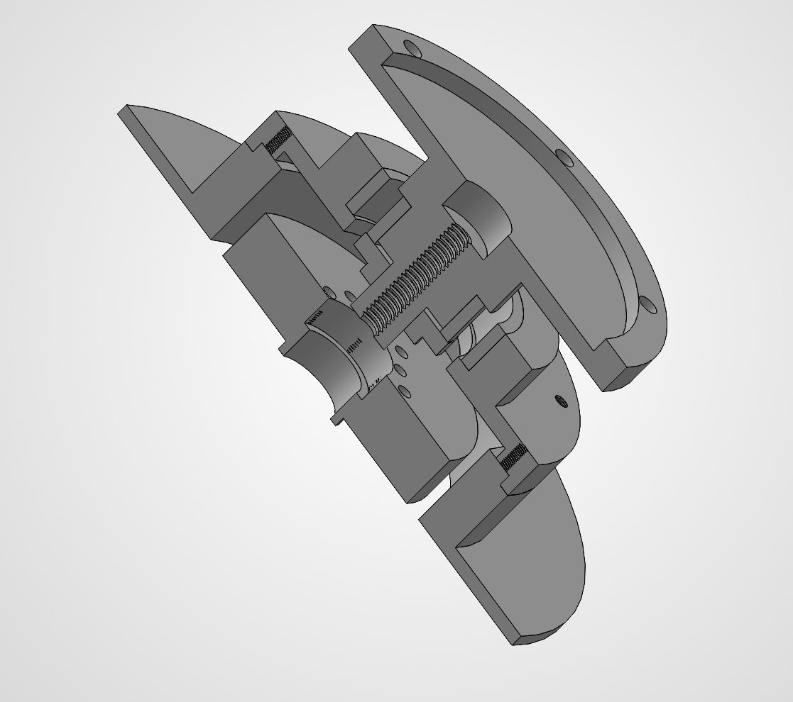
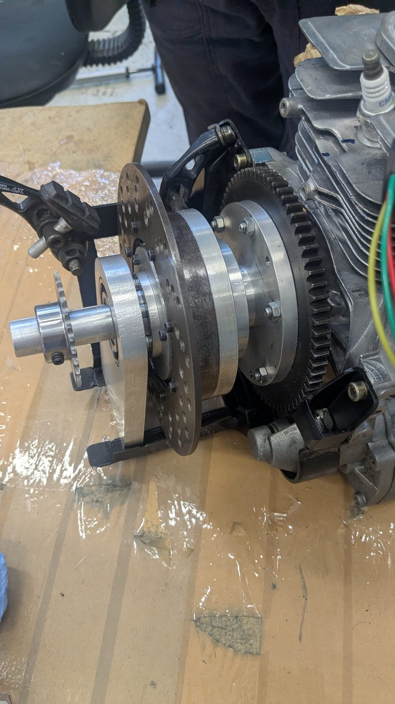

Description Approfondie du Projet
Au sein de l'association étudiante Valmev de l'INSA Hauts-de-France, j'ai participé activement à la création et au développement du prototype d'efficience énergétique.
Missions & Réalisations :
- Conception CAO : Transmission mécanique sous SolidWorks et plans de fabrication normalisés.
- Usinage : Plans (couvercle épicycloïdal, couronne de démarreur, volant moteur).
- Composites : Réalisation d'éléments de carrosserie en fibre de carbone et fibre de verre.
Plans d'usine & CAO


Galerie Photos
